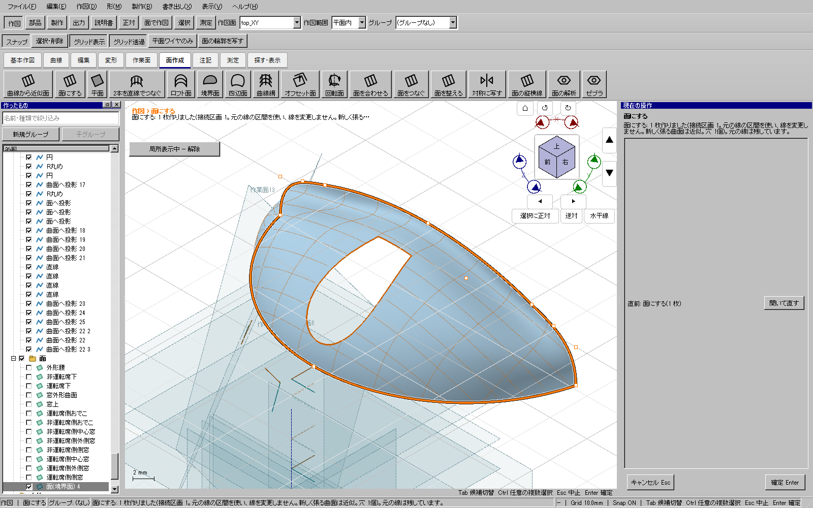
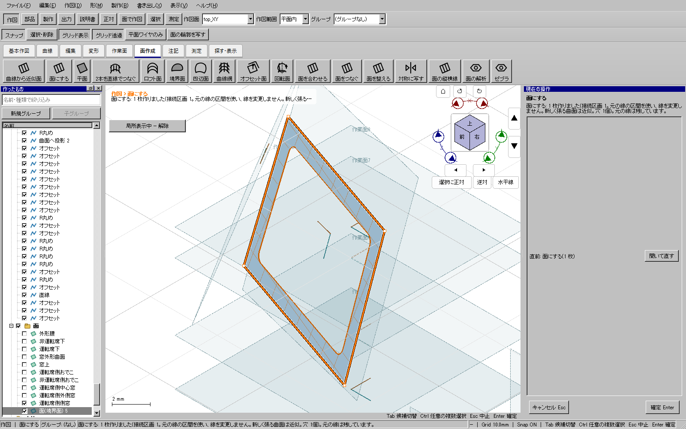
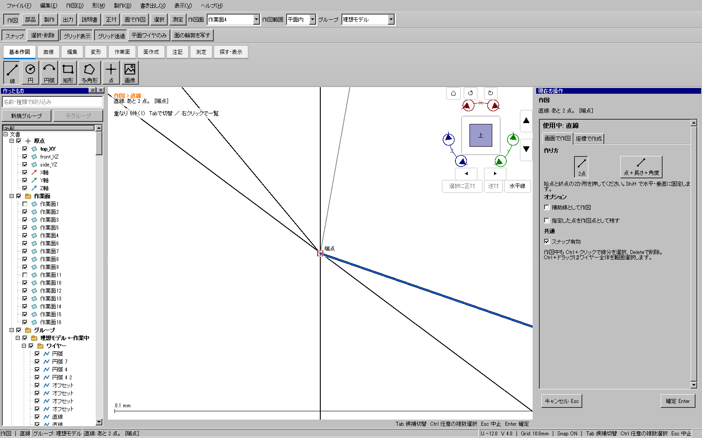
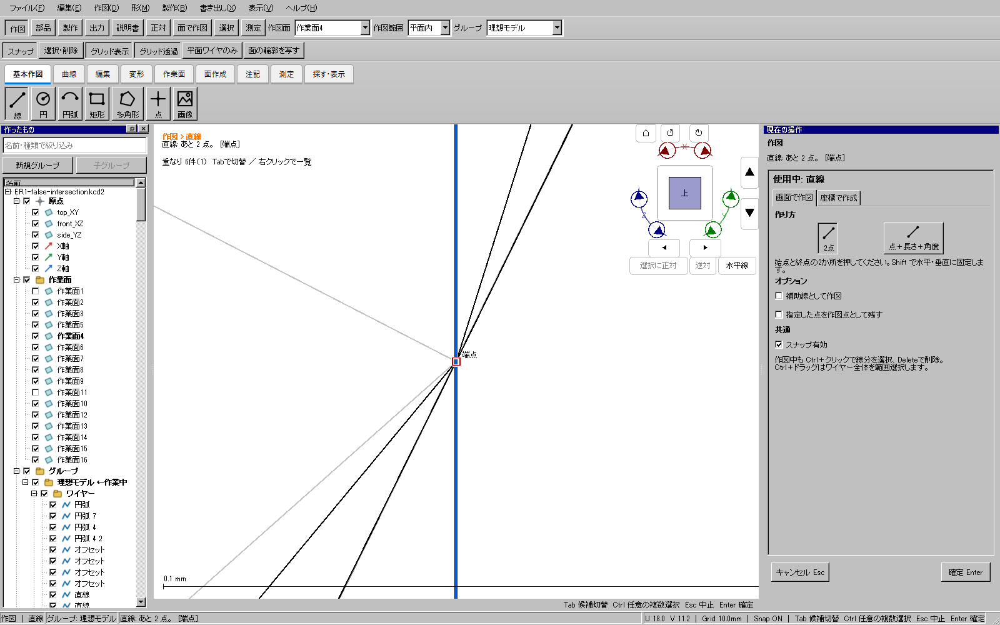

2026-11-27。円・円弧の拡大表示と実交点のずれを修正。既存の曲面の境界を保って穴を切り抜く。新しく張る面には内側の輪郭も拘束として渡す。面投影は編集可能なワイヤーを既定にし、作図面の名前をオフセット欄にも表示する。公開API・保存形式・外部依存・許容差を変更していない。
固定90度のベジェ近似によって、厳密な円弧の位置と表示線が離れていた。同じ円弧でも開始角や分割位置が違うと、近似の位置が変わり二重の線に見えた。共有円弧の旧描画偏差は約0.004027mmで、20000px/mmでは約81pxとなる。分割数を投影半径とベジェの最大半径誤差から決め、表示近似の半径誤差を0.05logical px以下に抑える。元の円弧・保存定義・UUIDを変更していない。
正面と斜め視点、円と円弧、負方向の部分円弧、通常・選択・ホバーの描画を画像で検査。旧版の不合格2例と修正版の点入力UI10件、表示UI7件、共有モデルの左右交点と別高さを含む1例に成功した。初回の試験は評価シーン更新前の空画面を見ていたため、再読込後の実画面で改めて旧版の失敗を取得した。過去の所有者用交点試験は削除済みの近傍線を参照するため、その失敗も保全し、現存する線で新しい所有者ケースを作った。
保存された「作業面6」はz=20mm、下側の輪郭はz=16.5mmで、3.5mmの高さ差がある。「平面内」でこの輪郭を使うには作業面4/5へ切り替える。空間の交点を使う場合は作図範囲を3D作図にする。見かけだけの交差を真の交点へ変更する修正はしていない。
「面で作図」→面を選ぶ→左一覧でその面を隠す→元の線を選ぶ→オフセットの順を追加試験した。面を隠しても作図面の原点・法線・横方向・縦方向を保ち、下見と確定がその平面内にある。平面、接平面、共有ER1の面6で成功した。
サーフェス「面(四辺面)6」の四隅は非共面で、三点の平面への残り一点の距離は約0.611mm。四隅に最も近い平面への最大距離は約0.14985mm、中心窓は約0.00334mmだった。四辺が直線でも平面とは限らず、「平坦優先」も平面への矯正ではない。モデルを勝手に平面化していない。
面で作図と平面を作る手順 ／ 元の輪郭をオフセットする ／ 面へ投影
核47例と関連CTest5群、重点UI64件、面を隠す追加UI3件、共有ER1/ER1_2の左一覧と3D入力、更新後の内側8区間をまとめた線からの面生成を確認。元の定義・UUID・参照、穴、周囲の材料、Undo/Redoと保存再読込を照合した。原本へ書き込まずout内の複製で試験した。調査中に保存元の形状が更新され、削除済み入力を含む旧試験は新しい入力構成へ更新して再検証した。
最終Windows全体ゲート curved-openings-windows-20261127e: CTest197件（skip0）、開発/配布UI各1097件、従来版自己試験、配布物の通常Windows起動2経路が成功。最初の全体はWindowsのマクロと衝突し得るnearという変数名を構造検査で拒否し改名した。全体bは面作図の追加再現、全体dは拡大時の描画と交点の報告を調べるため中断した。中断後に残った排他情報は、所有PIDと検証子プロセスの終了を確認し、記録を保全してから除いた。全体cの排他失敗も保全し、旧結果を成功へ変更せず新規eを最初から実行した。重点構造検査で新規画面試験の直接Qtヘッダー不足2件も検出して補い、最終全体の事前検査を通した。
アプリ内Qtのマウス・キー入力試験であり、OSレベルのComputer Use操作とは区別する。ユーザーの実画面はComputer Useの画面取得がタイムアウトしたが、読み取り専用のアクセシビリティから作図面名を確認した。実アプリの削除確認には操作していない。




v0.1.0-20261127-update1。対象コミット b5dd97dd8f2523eeac065e4509cac14a26c9953a。検証した同一ZIPの最新タグ・対象コミット・サイズ・SHA256を照合。SHA256 7d8f55762a2a6fcb4ef11cd9117a324d93eb833680eda2708c64337b8dcc2bf0。配布先 out/releases/curved-openings-windows-20261127e/package。